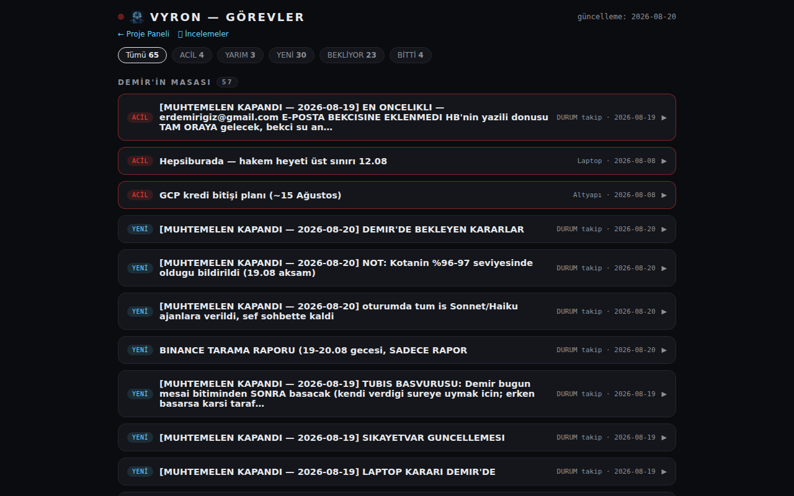

ÜRÜNLER

VYRON AgentOS
Kendi ihtiyaçlarımızdan doğan otomasyon sistemi. Ajanlarımız mail kontrolü, raporlama ve yedekleme gibi işleri arka planda kendi başlarına yürütür, biz tek bir panelden izleriz.
İşletmenize özel kurulur — kurulum 2-4 hafta.
AgentOS, gün içindeki tekrarlayan işleri devretmek için kendi ihtiyaçlarımızdan doğan bir otomasyon sistemi. Tek bir panelde projelerin durumu, ajanların ne yaptığı ve sistemin sağlığı görünür; komut Telegram'dan da verilebilir. Arka planda çalışan ajanlar mail kutusunu kontrol eder, günlük özet çıkarır, maliyet/abonelik takibini yapar ve her gece kısa bir öz-değerlendirme yazar.
Bu bir kutu ürün değil, işletmenize özel kurulan bir hizmettir: sistem sizin kendi sunucunuza/hesabınıza kurulur, kurulum 2-4 hafta sürer, veriniz bizde kalmaz. Mesajlaşma ve izin akışları İYS ve KVKK kurallarına uygun tasarlanır.
Şu an durumu: canlı ve her gün kullandığımız bir sistem — demo değil, gerçek iş akışımızın bir parçası; aynı yapıyı işletmenize özel kurulum hizmeti olarak sunuyoruz.

Sesli Şef
Claude Code'un terminal oturumuna ses kazandıran uygulama. Komutunuzu dikte edin, cevabı okumak yerine dinleyin. Uzun çalışmalarda gözünüzü dinlendirir, ekran başında olmadan da işi sürdürmenizi sağlar.
Çoğu "sesli yazma" aracı sadece dikteyi çözer; Sesli Şef'in farkı cevabın da sesli gelmesi. Tarayıcıdan tek bir sayfa açılır, mikrofona konuşursunuz, konuşmanız yazıya çevrilip terminaldeki Claude Code oturumuna gönderilir; Claude'un yazdığı cevap ise otomatik olarak Türkçe sesli okunur — uzun bir cevabı ekrandan okumak yerine dinlersiniz. İsterseniz mikrofon yerine yazarak da gönderebilirsiniz.
Kimin için: uzun süre ekrana bakmadan bir Claude Code oturumunu takip etmek isteyen, işini sesle sürdürmek isteyen herkes — elleri/gözleri başka işte olan, ama oturumun ne yaptığını kaçırmak istemeyen kullanıcı.
Şu an durumu: Claude Code ile çalışır; diğer terminal ajanları için geliştiriliyor.
AIrandevu Berber
Berber ve kuaförler için WhatsApp üzerinden randevu almayı kolaylaştıran bot. Müşteri size yazar gibi WhatsApp'tan yazar, randevusunu alır — siz sürekli telefona bakmak zorunda kalmazsınız. 10 gün ücretsiz deneyin.
İlk sürüm berber ve kuaförler için. Müşteri herhangi bir uygulama indirmeden, herhangi bir siteye girmeden, zaten kullandığı WhatsApp'tan işletmenin numarasına size yazar gibi yazar. Bot, işletmenin panelden eklediği hizmetler ve sorduğu sorularla konuşmayı otomatik ilerletir: uygun saatleri gösterir, müşteri seçer, gerekiyorsa hizmet türünü sorar, randevu kayda geçer. Amaç işletmenin gün boyu telefona cevap vermek zorunda kalmasını azaltmak.
Mesai dışında veya gece gelen istekler de kaybolmaz; randevu kayda geçer, işletmeye sabah tek bir özet mesajı gider. Randevular esnafın ajandasına, kendi belirlediği şekilde kaydedilir; işletme panelden istediği saati kapatabilir veya "bu saate sadece sakal" gibi kurallar koyabilir; isterse sohbete kendi girip devralabilir.
Kimin için: ilk sürüm berber/kuaför gibi randevu bazlı çalışan küçük işletmeler için tasarlandı; pilot bölge Edirne.
Şu an durumu: yazılım tarafı hazır ve otomatik testten geçti (29 testin tamamı yeşil); WhatsApp'ın resmi bağlantısı (Meta) şu an kuruluyor, ilk canlı pilot henüz başlamadı.
Try-On
Kıyafeti satın almadan önce kendi fotoğrafınızın üzerinde görme fikri. Şu an geliştirme aşamasında.
Try-On, bir ürün fotoğrafını müşterinin kendi fotoğrafıyla birleştirip "üzerinde nasıl durur" görselini üretmeyi hedefliyor — önce butik/e-ticaret siteleri için "üzerinde dene" düğmesi olarak, ileride kendi dolabınızdaki kıyafetleri tarayıp günlük kombin önerecek bir uygulamaya doğru büyüyecek şekilde tasarlandı.
Kimin için: ilk hedef küçük butik/e-ticaret siteleri (müşteri iade oranını düşürmek); uzun vadeli hedef bireysel kullanıcılar.
Şu an durumu: dürüst olmak gerekirse henüz bir müşteri sitesinde canlı çalışmıyor. Teknolojinin çalıştığını kendi testlerimizle gösterdik, altyapının iskeleti kuruldu. Şu anki hali bir geliştirme aşaması, satışa hazır bir ürün değil.